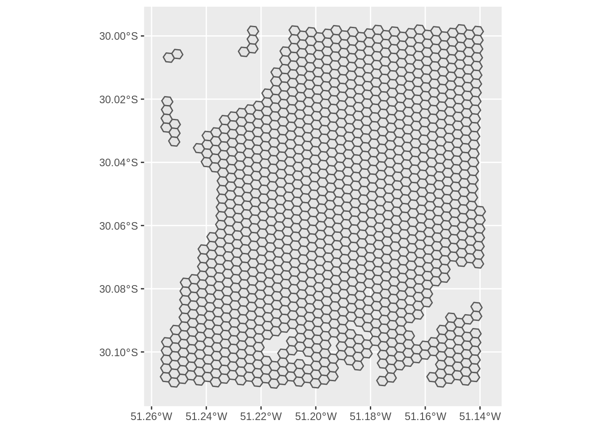
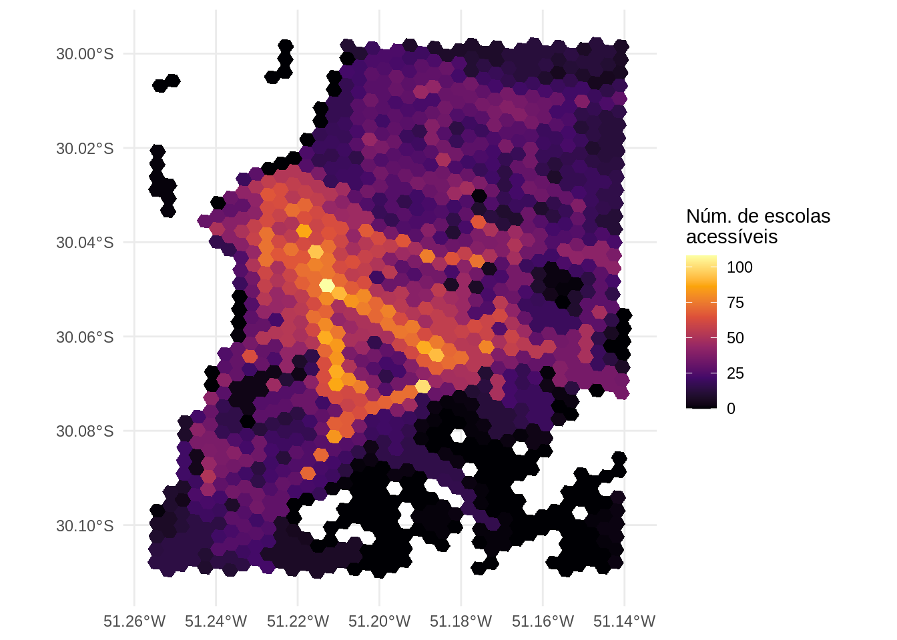
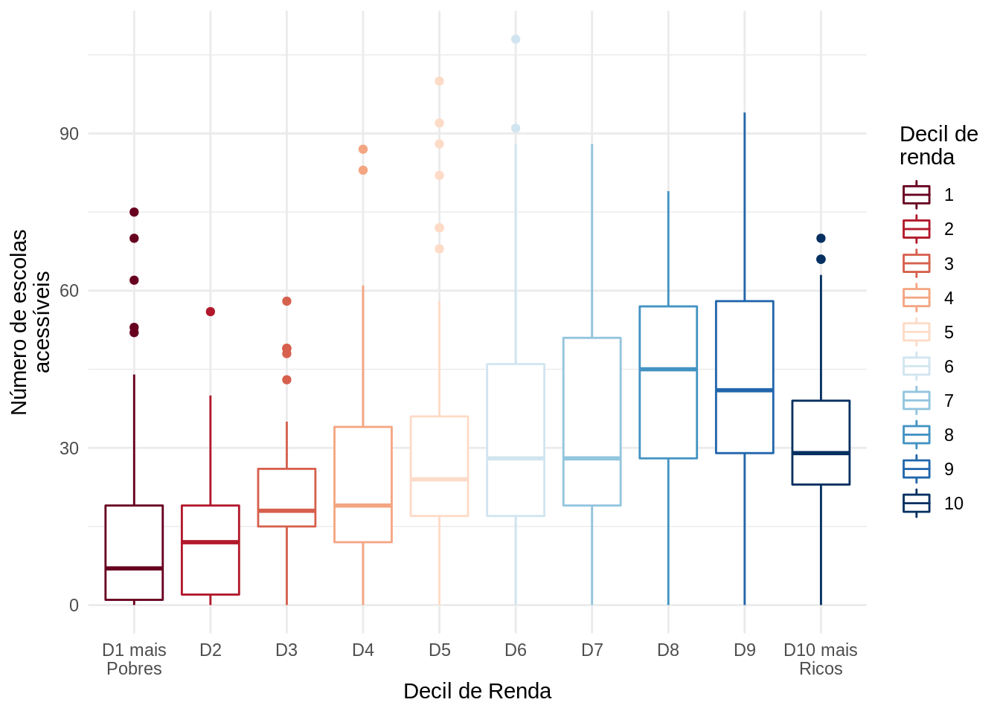

install.packages("r5r")3 Calculando acessibilidade urbana em R
3.1 Cálculo da matriz de tempo de viagem
A primeira etapa necessária para estimar os níveis de acessibilidade de uma área urbana é calcular a matriz de custo de viagem entre as diversas origens e destinos que a compõem. Como comentado anteriormente, na literatura científica e na prática do planejamento de sistemas de transporte esse custo é mais frequentemente representado pelo tempo de viagem que separa dois pontos (El-Geneidy et al. 2016; Venter 2016), embora trabalhos recentes tenham considerado também outros fatores, como o dinheiro necessário para realizar uma viagem e o nível de conforto da viagem entre um ponto e outro (Arbex and Cunha 2020; Herszenhut et al. 2022). Pela prevalência deste tipo de matriz na literatura e na prática, porém, iremos nos focar em matrizes de tempo de viagem.
Atualmente, a forma mais fácil e rápida de gerar uma matriz de tempo de viagem em R é utilizando o pacote {r5r} (Rafael H. M. Pereira et al. 2021), desenvolvido pela equipe do Projeto Acesso a Oportunidades, do Ipea. O pacote utiliza, por trás dos panos, o software de roteamento de transporte multimodal R5, desenvolvido pela Conveyal1.
3.1.1 Instalação do r5r
A instalação do {r5r} funciona como a instalação de qualquer pacote de R (todos os exemplos de código a seguir devem ser rodados em uma sessão de R).
Além do R, o pacote {r5r} requer também a instalação do Java 112. Use o comando abaixo para checar a versão do Java instalada em seu computador.
cat(processx::run("java", args = "-version")$stderr)openjdk version "11.0.17" 2022-10-18 LTS
OpenJDK Runtime Environment Zulu11.60+19-CA (build 11.0.17+8-LTS)
OpenJDK 64-Bit Server VM Zulu11.60+19-CA (build 11.0.17+8-LTS, mixed mode)Como podemos ver, a versão instalada no livro é compatível com o {r5r}. Caso a versão instalada na sua máquina não seja (resultado do código mencionando a versão 12 ou 1.8.0, por exemplo), por favor atualize o Java para a versão 11.
3.1.2 Dados necessários
O uso do pacote {r5r} requer diferentes tipos de dados. A lista abaixo descreve cada um deles, comenta sobre sua obrigatoriedade e apresenta algumas fontes onde esses dados podem ser obtidos:
- Rede viária (obrigatório): um arquivo com a rede viária e de infraestrutura de pedestres do OpenStreetMap, em formato
.pbf. Pode ser baixado com:- osmextract, pacote de R;
- Geofabrik, website;
- HOT Export Tool, website;
- BBBike Extract Service, website.
Qualidade dos Dados OpenStreetMap
O OpenStreetMap (OSM) é uma base de dados geográfica que traz informações sobre malha viária, prédios, parques, etc. Por ser uma base de dados alimentada voluntariamente pela comunidade, a cobertura e a qualidade dos dados do OSM podem variar muito entre regiões (Barrington-Leigh and Millard-Ball 2017). Via de regra, os dados do OSM no Brasil e no mundo tendem a ter melhor cobertura e qualidade em regiões mais desenvolvidas, em áreas urbanas e com maior população (Barrington-Leigh and Millard-Ball 2017; Camboim, Bravo, and Sluter 2015).
- Rede de transporte público (opcional): um arquivo GTFS descrevendo a rede de transporte público da área de estudo. Caso ausente, deslocamentos por transporte público não podem ser roteados. Pode ser baixado com:
- tidytransit, pacote de R;
- Transitland, website;
- No capítulo Chapter 4 deste livro (Tabela 4.9) nós indicamos também onde baixar os dados de GTFS de algumas cidades brasileiras que compartilham seus dados publicamente.
- Topografia (opcional): um arquivo de dados raster, com o modelo digital de elevação em formato
.tif. Utilizado caso deseje-se levar em consideração os efeitos da topografia do local sobre os tempos de caminhada e de viagens de bicicleta. Pode ser baixado com:
Esses dados devem ser salvos em uma mesma pasta que, preferencialmente, não contenha nenhum outro arquivo. Como veremos adiante, o {r5r} combina todos os dados salvos nesta pasta para criar uma rede de transporte multimodal que é utilizada para roteamento e cálculo das matrizes de tempo de viagem. Note que é possível ter mais de um arquivo GTFS na mesma pasta: nesse caso, o {r5r} considera as redes de transporte públicos de todos os feeds de forma conjunta. No entanto, a pasta deve conter um único arquivo de rede viária. Assumindo que os scripts de R estarão em uma pasta chamada R, uma possível organização dos arquivos segue o esquema abaixo:
/tmp/Rtmpk391oV/projeto_acessibilidade
├── R
│ ├── script1.R
│ └── script2.R
└── r5
├── rede_transporte_publico.zip
├── rede_viaria.osm.pbf
└── topografia.tifPara ilustrar as funcionalidades do {r5r}, nós vamos usar uma pequena amostra de dados da cidade de Porto Alegre, Brasil. Esses dados estão disponíveis dentro do próprio pacote {r5r}, e seu endereço pode ser acessado com o comando system.file("extdata/poa", package = "r5r"):
/home/runner/work/intro_access_book/intro_access_book/renv/library/R-4.2/x86_64-pc-linux-gnu/r5r/extdata/poa
├── poa.zip
├── poa_elevation.tif
├── poa_hexgrid.csv
├── poa_osm.pbf
└── poa_points_of_interest.csvEsta pasta possui quatro arquivos que vamos usar agora:
- A rede viária do OpenStreetMap:
poa_osm.pbf; - Dois feeds de GTFS das redes de ônibus e de trens:
poa_eptc.zipepoa_trensurb.zip; - O modelo digital de elevação da cidade:
poa_elevation.tif; - O arquivo
poa_hexgrid.csv, com as coordenadas geográficas dos centróides de uma grade hexagonal regular que cobre toda a área de estudo e com informações sobre o tamanho da população residente e o número de oportunidades (empregos, escolas e hospitais) em cada hexágono. Esses pontos serão utilizados como as origens e destinos no cálculo da matriz de tempo de viagem.
3.1.3 Calculando a matriz de tempo de viagens
Antes de calcular a matriz de tempo de viagem, precisamos aumentar a memória disponível para o Java. Isto é necessário porque, por padrão, o R aloca apenas 512MB de memória para processos do Java, o que frequentemente não é suficiente para o cálculo de grandes matrizes com o {r5r}. Para aumentar a memória disponível para 2GB, por exemplo, usamos o seguinte comando no início do script, antes mesmo de carregar as bibliotecas de R necessárias:
options(java.parameters = "-Xmx2G")Feito isso, agora podemos carregar as bibliotecas que vamos utilizar neste capítulo.
library(r5r)
library(accessibility)
library(sf)
library(data.table)
library(ggplot2)
library(aopdata)O cálculo de uma matriz de tempo de viagem de uma área de estudo é feito em dois passos. O primeiro é gerar a rede de transporte multimodal que será utilizada no roteamento. Para isso, nós utilizamos a função setup_r5(), que baixa o software de roteamento R5 e o utiliza para criar a rede. Esta função recebe como input o caminho da pasta onde os dados necessários para o roteamento estão armazenados. Como resultado, a função salva na pasta alguns arquivos necessários para o roteamento e retorna uma conexão com o R5, neste exemplo chamada de r5r_core, que é utilizada no cálculo da matriz de tempo de viagem.
path <- system.file("extdata/poa", package = "r5r")
r5r_core <- setup_r5(path, use_elevation = TRUE, verbose = FALSE)
fs::dir_tree(path)/home/runner/work/_temp/renv/cache/v5/R-4.2/x86_64-pc-linux-gnu/r5r/0.7.1/61db001154cd833466a25c4eb195c9b0/r5r/extdata/poa
├── network.dat
├── poa.zip
├── poa_elevation.tif
├── poa_hexgrid.csv
├── poa_osm.pbf
├── poa_osm.pbf.mapdb
├── poa_osm.pbf.mapdb.p
└── poa_points_of_interest.csvO passo final é usar a função travel_time_matrix() para o cálculo da matriz de tempo de viagem. Como inputs básicos, a função recebe a conexão com o R5 criada acima, pontos de origem e destino em formato de data.frame com as colunas id, lon e lat, o modo de transporte a ser utilizado e o horário de partida, o tempo máximo de caminhada permitido da origem até o embarque no transporte público e do desembarque até o destino, e o tempo máximo de viagem a ser considerado.
points <- fread(file.path(path, "poa_hexgrid.csv"))
ttm <- travel_time_matrix(
r5r_core,
origins = points,
destinations = points,
mode = c("WALK", "TRANSIT"),
departure_datetime = as.POSIXct(
"13-05-2019 14:00:00",
format = "%d-%m-%Y %H:%M:%S"
),
max_walk_dist = 800,
max_trip_duration = 120,
verbose = FALSE,
progress = FALSE
)
head(ttm) fromId toId travel_time
1: 89a901291abffff 89a901291abffff 1
2: 89a901291abffff 89a901295b7ffff 41
3: 89a901291abffff 89a9012809bffff 43
4: 89a901291abffff 89a901285cfffff 35
5: 89a901291abffff 89a90e934d7ffff 71
6: 89a901291abffff 89a90129b47ffff 58Na prática, o que a função travel_time_matrix() faz é encontrar a rota mais rápida partindo de cada ponto de origem para todos os possíveis pontos de destino, considerando o modo de viagem, o horário de partida e os demais parâmetros passados pelo usuário. Para isso, o {r5r} considera tempos de viagem de porta-a-porta: no caso de uma viagem por transporte público, por exemplo, o tempo total de viagem inclui a) o tempo de caminhada até a parada de transporte público; b) o tempo de espera pelo veículo na parada; c) o tempo de deslocamento dentro do veículo; e d) o tempo de viagem a pé da parada de desembarque até o destino. Em casos em que mais de uma rota de transporte público é utilizada, o {r5r} também contabiliza o tempo gasto nas conexões, considerando a caminhada entre paradas e o tempo de espera pelo próximo veículo.
Diversos outros inputs podem ser passados para o cálculo da matriz, como a velocidade de caminhada e o número máximo de pernas de transporte público permitido, entre outros. Para mais informações sobre cada um dos parâmetros, por favor consulte a documentação da função disponível no pacote em uma sessão de R (com os comandos ?travel_time_matrix() e help(“travel_time_matrix”)) ou no site do {r5r}, aqui.
A função travel_time_matrix() utiliza uma extensão do algoritmo de roteamento RAPTOR (Conway, Byrd, and van der Linden 2017), o que torna o R5 extremamente rápido. A depender da quantidade de pares de origem-destino, o {r5r} pode ser entre 6 e 200 vezes mais rápido do que outros softwares de roteamento multimodal no cálculo de uma matriz de tempo de viagem (Higgins et al. 2022).
3.2 Cálculo de acessibilidade
Após calculada a matriz de tempo de viagem entre as origens e os destinos da área de estudo, nós precisamos utilizá-la para calcular os níveis de acessibilidade do local. Para isso, nós utilizaremos o pacote {accessibility}3, também desenvolvido pela equipe do Projeto Acesso a Oportunidades, Ipea, que contém diversas funções para o cálculo de vários indicadores de acessibilidade. Como input básico, todas as funções requerem uma matriz de custo pré-calculada (no nosso caso, a matriz de tempo de viagem calculada na seção anterior) e dados de uso do solo, como, por exemplo, o número de determinados tipos de oportunidades em cada célula da grade que cobre a área de estudo.
Medida de oportunidades cumulativas
A função cumulative_cutoff() é utilizada para calcular o número de oportunidades que pode ser alcançado em um determinado limite de custo de viagem. No exemplo abaixo, nós calculamos o número de escolas que podem ser alcançados em até 30 minutos de viagem a partir de cada origem presente em nossa matriz de tempo de viagem.
# renomear nome das colunas
setnames(ttm, c("fromId", "toId"), c("from_id", "to_id"))
cumulative_access <- cumulative_cutoff(
travel_matrix = ttm,
land_use_data = points,
opportunity = "schools",
travel_cost = "travel_time",
cutoff = 30
)
head(cumulative_access) id schools
1: 89a901291abffff 19
2: 89a9012a3cfffff 0
3: 89a901295b7ffff 15
4: 89a901284a3ffff 0
5: 89a9012809bffff 20
6: 89a901285cfffff 82Custo mínimo de viagem
A função cost_to_closest(), por sua vez, calcula o custo mínimo de viagem necessário para alcançar um determinado número de oportunidades. O código abaixo, por exemplo, calcula o tempo de viagem mínimo para alcançar o hospital mais próximo a partir de cada origem.
min_cost <- cost_to_closest(
travel_matrix = ttm,
land_use_data = points,
opportunity = "schools",
travel_cost = "travel_time"
)
head(min_cost) id travel_time
1: 89a9012124fffff 0
2: 89a9012126bffff 16
3: 89a9012127bffff 11
4: 89a90128003ffff 7
5: 89a90128007ffff 20
6: 89a9012800bffff 0Medidas gravitacionais
A função gravity() calcula medidas gravitacionais de acessibilidade - ou seja, aquelas nas quais o peso de cada oportunidade diminui gradualmente com o aumento do custo de viagem. Existem, no entanto, uma gama de diferentes tipos de funções de decaimento que podem ser utilizadas, como funções de decaimento exponenciais negativas, de potências inversas, entre outras. Por isso, esta função recebe um input adicional: a função de decaimento a ser utilizada no cálculo. O exemplo abaixo apresenta o cálculo de acessibilidade a estabelecimentos de educação usando uma medida gravitacional exponencial negativa com parâmetro de decaimento igual a 0.2.
negative_exp_access <- gravity(
travel_matrix = ttm,
land_use_data = points,
opportunity = "schools",
travel_cost = "travel_time",
decay_function = decay_exponential(0.2)
)
head(negative_exp_access) id schools
1: 89a901291abffff 0.3589287
2: 89a9012a3cfffff 0.0000000
3: 89a901295b7ffff 0.5206127
4: 89a901284a3ffff 0.0000000
5: 89a9012809bffff 0.4476908
6: 89a901285cfffff 1.9573827Medidas com competição
Por fim, a função floating_catchment_area() calcula níveis de acessibilidade levando em consideração a competição por oportunidades usando diferentes indicadores do tipo floating catchment area. Como diversos métodos de FCA podem ser utilizados, a função requer que o método desejado seja explicitamente assinalado. E, assim como a função de acessibilidade gravitacional, a função de decaimento utilizada também deve ser definida pelo usuário. O código a seguir mostra um exemplo de cálculo de acessibilidade a oportunidades de emprego usando o método BFCA (Paez, Higgins, and Vivona 2019), levando em consideração os efeitos de competição entre a população como um todo e uma função de decaimento exponencial com parâmetro de decaimento igual a 0.05.
bfca_access <- floating_catchment_area(
travel_matrix = ttm,
land_use_data = points,
opportunity = "schools",
travel_cost = "travel_time",
demand = "population",
method = "bfca",
decay_function = decay_exponential(0.05)
)
head(bfca_access) id schools
1: 89a901291abffff 0.0002574442
2: 89a9012a3cfffff 0.0000000000
3: 89a901295b7ffff 0.0002091911
4: 89a901284a3ffff 0.0000000000
5: 89a9012809bffff 0.0002276971
6: 89a901285cfffff 0.0003928648As funções apresentadas nesta seção também podem receber outros inputs não explicitamente mencionados aqui. Para mais informações sobre cada um dos parâmetros, por favor consulte a documentação do pacote {accessibility} em seu site.
3.3 Cálculo de acessibilidade com o r5r
Ao longo das duas seções anteriores, nós mostramos como calcular níveis de acessibilidade passo-a-passo. Para fins didáticos, é importante entender que o cálculo de estimativas de acessibilidade tem como primeiro passo a geração de uma matriz de custos de viagens que posteriormente é utilizada para estimar níveis de acessibilidade. No entanto, o {r5r} inclui também uma função chamada accessibility() que faz todo esse processamento de uma vez só.
De forma parecida com a função de cálculo de matriz de tempo de viagem, a função accessibility() recebe como inputs uma conexão com o R5, as origens, os destinos, os modos de transporte e o tempo de partida, entre outros argumentos. Adicionalmente, devem ser listadas também quais oportunidades devem ser consideradas e a função de decaimento que deve ser utilizada, bem como o valor do limite de custo e do parâmetro de decaimento. O exemplo abaixo mostra uma aplicação desta função.
r5r_access <- accessibility(
r5r_core,
origins = points,
destinations = points,
opportunities_colname = "schools",
decay_function = "step",
cutoffs = 30,
mode = c("WALK", "TRANSIT"),
departure_datetime = as.POSIXct(
"13-05-2019 14:00:00",
format = "%d-%m-%Y %H:%M:%S"
),
max_walk_dist = 800,
max_trip_duration = 120,
verbose = FALSE,
progress = FALSE
)
head(r5r_access) from_id percentile cutoff accessibility
1: 89a901291abffff 50 30 17
2: 89a9012a3cfffff 50 30 0
3: 89a901295b7ffff 50 30 13
4: 89a901284a3ffff 50 30 0
5: 89a9012809bffff 50 30 17
6: 89a901285cfffff 50 30 78Como podemos observar, o resultado desta função são os mesmos níveis de acessibilidade já calculados anteriormente, no exemplo da medida de oportunidades cumulativas. A informação “intermediária” do tempo de viagem entre origens e destinos, consequentemente, não fica disponível ao usuário com o uso desta função. Ainda assim, este fluxo de trabalho pode ser uma boa alternativa para pessoas que estejam interessadas unicamente nos níveis de acessibilidade, não dependendo do tempo de viagem em suas análises.
3.4 Análises de acessibilidade
Calculados os níveis de acessibilidade, procedemos então para sua análise. Existe uma grande variedade de análises que podem ser feitas usando esses dados: por exemplo, em diagnósticos das condições de acessibilidade urbana de diferentes bairros, pesquisas sobre desigualdades de acesso a oportunidades entre diferentes grupos sociais, análises sobre exclusão social e accessibility poverty (insuficiência de acessibilidade, em tradução livre), etc. Nesta seção, no entanto, nos restringiremos a apresentar duas análises relativamente simples e de fácil comunicação: a distribuição espacial da acessibilidade e sua distribuição entre diferentes grupos de renda.
Distribuição espacial de acessibilidade urbana
Para compreendermos a distribuição espacial da acessibilidade urbana de uma determinada cidade ou região, primeiro precisamos obter as informações espaciais dos pontos que foram utilizados como origens e destinos no cálculo da matriz. Os pontos que nós usamos nos exemplos anteriores, por exemplo, correspondem a células de uma grade hexagonal baseadas no índice H3, desenvolvido pela Uber (Brodsky 2018). O código e o mapa a seguir mostram a distribuição desses hexágonos na nossa área de estudo. Aqui, a gente faz o download da grade espacial disponível no pacote {aopdata}, que será apresentado com mais detalhes na Seção 5:
# download grade espacial
poa_grid <- aopdata::read_grid(city="Porto Alegre")
# filtra apenas hexagonos utilizados na análise
poa_grid <- subset(poa_grid, id_hex %in% points$id)
# cria mapa
ggplot(poa_grid) + geom_sf()
Para visualizarmos os nossos dados de acessibilidade espacialmente, portanto, nós precisamos unir a nossa tabela de estimativas de acessibilidade (vamos usar os níveis calculados com a medida de oportunidades cumulativas) com a tabela que contém os dados espaciais da grade, usando as colunas de identificação dos hexágonos como colunas-chave. A operação de left join usada para isso, bem como o seu resultado em formato de imagem, são apresentados a seguir.
# converte objeto para data.table
setDT(poa_grid)
# merge para trazer info do número de escolas
poa_grid[cumulative_access, on = c(id_hex = "id"), schools_access := i.schools]
# converte de volta para objeto espacial sf
poa_grid <- st_sf(poa_grid)
# plotar mapa
ggplot(poa_grid) +
geom_sf(aes(fill = schools_access), color = NA) +
scale_fill_viridis_c(option = "inferno") +
labs(fill='Núm. de escolas\nacessíveis') +
theme_minimal()
Como podemos ver, os níveis de acessibilidade tendem a se concentrar de forma mais acentuada no centro da cidade, onde existe maior concentração de empregos, e próximos aos grandes corredores de transportes da cidade. Por terem fácil acesso a modos de alta capacidade e velocidade, pessoas que moram mais perto desses corredores tendem a acessar locais distantes relativamente rápido. Em contraste, pessoas que moram mais longe desses corredores, dependem de modos de menor menor frequência e velocidade operacional (como os ônibus municipais, por exemplo) e precisam gastar mais tempo para alcançar os corredores de média e alta capacidade. Como consequência, os níveis de acessibilidade de pessoas que moram afastadas do centro e de corredores de alta capacidade tendem a ser menores.
Distribuição socioeconômica de acessibilidade urbana
O mapa acima, embora revelador quanto aos locais em que estão dispostas as maiores concentrações de acessibilidade, nada diz sobre quais são os grupos socioeconômicos que possuem os maiores potenciais de acesso a oportunidades na região. Para isso, nós precisamos cruzar informações demográficas e econômicas das pessoas que moram em cada um dos nossos pontos de origem com os dados de acessibilidade previamente calculados.
No exemplo abaixo, nós juntamos aos dados de acessibilidade a informação do decil de renda de cada uma das origens, considerando a renda média de cada uma das pessoas que as habitam. Assim, nós conseguimos identificar se um hexágono é de baixa, média ou alta renda. Os dados socioeconômicos que utilizamos no exemplo vêm do censo demográfico brasileiro de 2010, e foram agregados na grade espacial de hexágonos por Rafael H. M. Pereira et al. (2022). Aqui, nós acessamos os dados no R usando o pacote {aopdata}.
poa_population <- aopdata::read_population("Porto Alegre", showProgress = FALSE)
setDT(poa_grid)
poa_grid[
poa_population,
on = "id_hex",
`:=`(
pop_count = i.P001,
income_decile = i.R003
)
]
poa_grid[, .(id_hex, schools_access, pop_count, income_decile)] |> head() id_hex schools_access pop_count income_decile
1: 89a9012124fffff 14 733 9
2: 89a9012126bffff 13 355 9
3: 89a9012127bffff 14 996 10
4: 89a90128003ffff 34 1742 4
5: 89a90128007ffff 15 477 5
6: 89a9012800bffff 34 501 4Tendo a informação do decil de renda em que cada hexágono se encontra, nós podemos calcular a distribuição da acessibilidade da população dentro de cada um desses níveis de renda. Para isso, nós precisamos ponderar o nível de acessibilidade de cada origem pela quantidade de pessoas que residem ali - daí o porquê de termos também trazido a informação da contagem populacional em cada hexágono. Fazendo a ponderação, nós obtemos a distribuição da acessibilidade das pessoas localizadas em origens de um determinado decil de renda. Caso não ponderássemos, no entanto, nós teríamos a distribuição de acessibilidade não das pessoas localizadas em cada hexágono, mas dos hexágonos em si. Como em nossa análise nós nos importamos com as pessoas, e não com as unidades espaciais em que elas estão agregadas, precisamos fazer a ponderação. Nós podemos visualizar a distribuição de acessibilidade de cada decil usando um boxplot, como feito a seguir.
ggplot(poa_grid[!is.na(income_decile)]) +
geom_boxplot(
aes(
x = as.factor(income_decile),
y = schools_access,
color = as.factor(income_decile),
weight = pop_count
)
) +
labs(color="Decil de\nrenda", x="Decil de Renda", y="Número de escolas\nacessíveis") +
scale_color_brewer(palette = 'RdBu') +
scale_x_discrete(labels=c("D1 mais\nPobres", paste0('D', 2:9), "D10 mais\nRicos")) +
theme_minimal()
O gráfico é muito claro em seu conteúdo: pessoas de mais baixa renda tendem a ter níveis de acessibilidade consideravelmente menores do que as de alta renda. Isso é um padrão comum em praticamente todas as cidades brasileiras (R. H. M. Pereira et al. 2019). Isto ocorre, em larga medida, devido à localização espacial das comunidades de baixa e alta renda no território: os mais ricos costumam morar em áreas mais valorizadas, próximas das grandes concentração de empregos (e oportunidades de educação, saúde, lazer, etc., também) e com maior oferta de transporte público de média e alta capacidade. Os mais pobres, por sua vez, tendem a morar em locais mais afastados, onde o valor da terra é menor. Consequentemente, tendem também a se afastar das grandes concentrações de oportunidades. Junta-se a isso o fato de, na maior parte dos casos, a oferta de serviços de transporte público de média e alta capacidade ser pior em locais com maior concentração de pessoas de baixa renda. Como consequência, seus níveis de acessibilidade são, em média, muito menores do que os dos mais ricos, como o gráfico deixa claro.
Disponível em https://github.com/conveyal/r5.↩︎
O Java 11 pode ser baixado em https://www.oracle.com/java/technologies/downloads/#java11 ou em https://jdk.java.net/java-se-ri/11.↩︎
Disponível em https://github.com/ipeaGIT/accessibility.↩︎